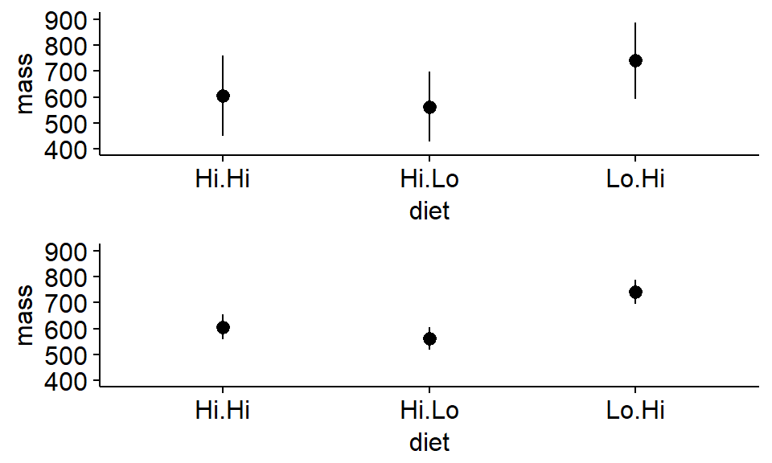
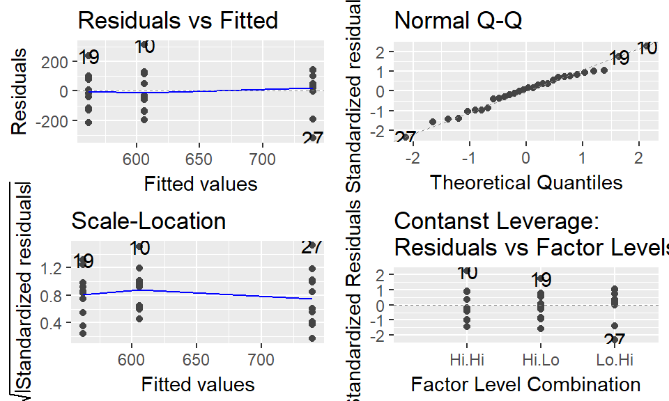

The purpose of this lab is to learn the basics of 1-way ANOVA in R. We will explore data where white-tailed deer where fed different diets over the course of the spring and summer of one year.
Note: there is no “Lo.Lo” treatment
Analyis with 1-way ANOVA will allow us to determine whether
In this section the grand mean on ALL the data is calculated; data is NOT broken up by treatment! Data is considered by subgroup below
Load data
library(wildlifeR)
data(antlers)# total sample size (all observations)
dim(antlers)## [1] 30 5n.total <- length(antlers$mass)
#mean of ALL samples
summary(antlers)## diet mass circum beam
## Hi.Hi:10 Min. :346.0 Min. : 57.95 Min. :247.3
## Hi.Lo:10 1st Qu.:526.9 1st Qu.: 87.85 1st Qu.:392.9
## Lo.Hi:10 Median :648.4 Median : 96.67 Median :424.5
## Mean :635.9 Mean : 99.43 Mean :412.0
## 3rd Qu.:762.4 3rd Qu.:112.17 3rd Qu.:440.2
## Max. :919.3 Max. :136.06 Max. :568.2
## spread
## Min. :223.8
## 1st Qu.:295.1
## Median :346.0
## Mean :341.4
## 3rd Qu.:383.5
## Max. :459.7mean(antlers$mass)## [1] 635.9164#variance of ALL samples
var(antlers$mass)## [1] 25767.67#stdev of ALL samples
mass.sd <- sd(antlers$mass)This ignores treatments. All data are combined / pooled.
We’ll do this a couple different ways to show how R code can vary.
Broken up into steps, saving an object at each stuep
#square root of N
sqrt.n <- sqrt(n.total)
#the see
mass.se <- mass.sd/sqrt.n
mass.se## [1] 29.30738Doing it a little “on fly”
mass.se <- mass.sd/sqrt(n.total)Totally on the fly - nothing pre-saved as an object
#Using raw data
mass.se <- sd(antlers$mass)/
sqrt(length(antlers$mass))This is the 95% confidence interval around the overall/grand mean. W approximate the CI as 1.96*SE
1.96*mass.se## [1] 57.44246See pages 70-73 in “Getting started with R: An INtroduction for Biologists” for information on summarize() and group_by(). In particular see section 3.7.3 on page 72: “Method 2: Pipe, no nesting”
library(dplyr)
antlers %>% group_by(diet) %>%
summarize(mass.mean = mean(mass))## # A tibble: 3 x 2
## diet mass.mean
## <fctr> <dbl>
## 1 Hi.Hi 605.9653
## 2 Hi.Lo 561.9856
## 3 Lo.Hi 739.7984We can get the SD like this
antlers %>% group_by(diet) %>%
summarize(mass.sd = sd(mass))## # A tibble: 3 x 2
## diet mass.sd
## <fctr> <dbl>
## 1 Hi.Hi 154.6435
## 2 Hi.Lo 134.9401
## 3 Lo.Hi 147.8019And the sample size like this
antlers %>% group_by(diet) %>%
summarize(mass.N = length(mass))## # A tibble: 3 x 2
## diet mass.N
## <fctr> <int>
## 1 Hi.Hi 10
## 2 Hi.Lo 10
## 3 Lo.Hi 10We can calcualte all of them like below. this time we’ll store the ouptut in an object “mass.means”
mass.means <- antlers %>% group_by(diet) %>%
summarize(mass.mean = mean(mass),
mass.sd = sd(mass),
mass.N = length(mass))mass.SEs <- mass.means$mass.sd/sqrt(mass.means$mass.N)Add them to the dataframme
mass.means$mass.SEs <- mass.SEsWe can conver these to approximately 95% confidence intervals like this
mass.means$mass.CI95 <- mass.means$mass.SEs*1.96What do you notice about the relationship between the SD, SE, and 95% CI?
We’ll plot means using ggpubr. We’ll give the function ggerrorplot() the raw data and it will calculate the means etc to make the plot.
See the link below for more information http://www.sthda.com/english/articles/24-ggpubr-publication-ready-plots/79-plot-meansmedians-and-error-bars/
mean_se mean_sd mean_range
First, we’ll plot the means and their standard deviations SD
library(ggpubr)
ggerrorplot(antlers,
x = "diet",
y = "mass",
desc_stat = "mean_sd",
add = "mean"
)Next we’ll plot the standard errors. What happens to the x-axis?
ggerrorplot(antlers,
x = "diet",
y = "mass",
desc_stat = "mean_se",
add = "mean"
)We can make a plot with both if we save the plots to R objects. We’ll use the argument ylim = c(400,1000) to make it so they both have the same y axes
Note: We’ll need to load the gridExtra package
library("gridExtra")
plot1 <- ggerrorplot(antlers,
x = "diet",
y = "mass",
desc_stat = "mean_sd",
add = "mean",
ylim = c(400,900) #set axes
)
plot2 <- ggerrorplot(antlers,
x = "diet",
y = "mass",
desc_stat = "mean_se",
add = "mean",
ylim = c(400,900) #set axes
)Plot both plots. What do you notice about the standard errors?
grid.arrange(plot1,plot2)
We can also easily make a plot using confience intervals.
ggerrorplot(antlers,
x = "diet",
y = "mass",
desc_stat = "mean_ci",
add = "mean",
ylim = c(400,900) #set axes
)We have not calculated any p-values yet, but can you use the “inference by eye” approach to judge whether any of the means are likely to be “significantly” different based on the 95% confidence intervals?
An “omnibus ANOVA test” (or “omnibus F test”) is used to gauge whether all the means are approximatley equal or whether at least one is likely to be different than the others. “Omnibus” means “overall”.
We build a null modle represent the null hypothesis that there is no difference between the any of the groups. Not that we code “mass ~ 1” to represent this null model, which has just a single mean value for all of the data.
model.null <- lm(mass ~ 1,
data = antlers)We buidl an alternative model or “model of interest” to test the hypothesis we are interested in: that diet impacts antler growth in some way. This model will have 3 means: one for each treatment.
model.alt <- lm(mass ~ diet,
data = antlers)Produce the ANOVA table using the anova() command. This will give us the F statistics (the test statistics for ANOVA), degrees of freedom, and our p-values. (It will also give us some other info that we’ll ignore for now but that is typically reported when you do an ANOAV)
anova(model.null,
model.alt)## Analysis of Variance Table
##
## Model 1: mass ~ 1
## Model 2: mass ~ diet
## Res.Df RSS Df Sum of Sq F Pr(>F)
## 1 29 747262
## 2 27 575719 2 171543 4.0225 0.02958 *
## ---
## Signif. codes: 0 '***' 0.001 '**' 0.01 '*' 0.05 '.' 0.1 ' ' 1If you are curious and things are going well, do the optional activities. These are completely optional
Look at the output and how it compares to what we did with anova() on the two models.
summary(model.null)##
## Call:
## lm(formula = mass ~ 1, data = antlers)
##
## Residuals:
## Min 1Q Median 3Q Max
## -289.9 -109.0 12.5 126.5 283.4
##
## Coefficients:
## Estimate Std. Error t value Pr(>|t|)
## (Intercept) 635.92 29.31 21.7 <2e-16 ***
## ---
## Signif. codes: 0 '***' 0.001 '**' 0.01 '*' 0.05 '.' 0.1 ' ' 1
##
## Residual standard error: 160.5 on 29 degrees of freedomsummary(model.alt)##
## Call:
## lm(formula = mass ~ diet, data = antlers)
##
## Residuals:
## Min 1Q Median 3Q Max
## -322.09 -103.31 14.16 99.22 313.33
##
## Coefficients:
## Estimate Std. Error t value Pr(>|t|)
## (Intercept) 605.97 46.18 13.123 3.12e-13 ***
## dietHi.Lo -43.98 65.30 -0.673 0.5064
## dietLo.Hi 133.83 65.30 2.049 0.0503 .
## ---
## Signif. codes: 0 '***' 0.001 '**' 0.01 '*' 0.05 '.' 0.1 ' ' 1
##
## Residual standard error: 146 on 27 degrees of freedom
## Multiple R-squared: 0.2296, Adjusted R-squared: 0.1725
## F-statistic: 4.022 on 2 and 27 DF, p-value: 0.02958Look at the output and how it compares to what we did with anova() on the two models.
anova(model.alt)## Analysis of Variance Table
##
## Response: mass
## Df Sum Sq Mean Sq F value Pr(>F)
## diet 2 171543 85772 4.0225 0.02958 *
## Residuals 27 575719 21323
## ---
## Signif. codes: 0 '***' 0.001 '**' 0.01 '*' 0.05 '.' 0.1 ' ' 1We’ll add a “-1” to the model statemnt and call summary(). How does this differe from summary(model.alt)? (The difference is subtle…)
model.alt.2 <- lm(mass ~-1 + diet, data = antlers)
summary(model.alt.2)##
## Call:
## lm(formula = mass ~ -1 + diet, data = antlers)
##
## Residuals:
## Min 1Q Median 3Q Max
## -322.09 -103.31 14.16 99.22 313.33
##
## Coefficients:
## Estimate Std. Error t value Pr(>|t|)
## dietHi.Hi 605.97 46.18 13.12 3.12e-13 ***
## dietHi.Lo 561.99 46.18 12.17 1.80e-12 ***
## dietLo.Hi 739.80 46.18 16.02 2.59e-15 ***
## ---
## Signif. codes: 0 '***' 0.001 '**' 0.01 '*' 0.05 '.' 0.1 ' ' 1
##
## Residual standard error: 146 on 27 degrees of freedom
## Multiple R-squared: 0.9553, Adjusted R-squared: 0.9503
## F-statistic: 192.3 on 3 and 27 DF, p-value: < 2.2e-16We can plot the “model diagnostics” using plot(). We will go into further details on this topic in the future.
Note: the par(mfrow = c(2,2)) is a bit of cryptic R code that sets up the plotting window to have 4 panels
Also note: we’ll use the ggplot2 addon library ggfortify for this, which has a fabulous function autoplot()
#load the library
library(ggfortify)
#plot the residuals
autoplot(model.alt)
The traditional way of doing a 1-way ANOVA is to follow up a “significant” Omnibus test with seperate t-tests that compare pair of means. This is called doing “pairwise” comparison - you go pair by pair doing t-tests.
The function pairwise.t.test() is used. Note that p.adjust.method = “none” line, which means we are given raw p-values that have not been corrected fro muotipel comparisons (see below)
The more t-tests you do, the more likely you are to get a “Significant” (low) p-value just due to chance. Rememeber - the definition of a p-value is such that it always leaves open the possiblity that the patterns you see are just due to random noise. This is called the “problem of multiple comparisons.”
One way that is advocated to to deal with this issue of multiple comparisons is to increase p-values. One way of doing this this is to use a “Bonferroni” correction. This can be done using pairwise.t.test() and setting p.adjust.method = “bonferroni”
pairwise.t.test(x = antlers$mass,
g = antlers$diet,
p.adjust.method = "bonferroni")##
## Pairwise comparisons using t tests with pooled SD
##
## data: antlers$mass and antlers$diet
##
## Hi.Hi Hi.Lo
## Hi.Lo 1.000 -
## Lo.Hi 0.151 0.034
##
## P value adjustment method: bonferroniWhen doing a 1-way ANOVA with three groups, a good option is to do a Tukey Test using the TukeyHSD() function. However, to do this you need first need to jump through a hoop: you need to redo the model model using the aov() function. (aov stands for “analysis of variance”)
model.alt.aov <- aov(mass ~ diet,
data = antlers)When the model is fit using aov() you can then use TukeyHSD(). This gives you p-values for each set of pairwise comparisons and, more importantly effect sizes and their confidence intervals for each comparison. Importantly, the p-values and CIs have been increased to deal with the fact that you are making multiple comparisons.
TukeyHSD(model.alt.aov)## Tukey multiple comparisons of means
## 95% family-wise confidence level
##
## Fit: aov(formula = mass ~ diet, data = antlers)
##
## $diet
## diff lwr upr p adj
## Hi.Lo-Hi.Hi -43.97973 -205.89517 117.9357 0.7807326
## Lo.Hi-Hi.Hi 133.83308 -28.08236 295.7485 0.1198088
## Lo.Hi-Hi.Lo 177.81281 15.89737 339.7282 0.0292046The wildlifeR package contains a function that makes nice plots (IMHO) of the output of the TukeyHSD function.
par(mfrow = c(1,1))
tukey.out <- TukeyHSD(model.alt.aov)
plotTukeysHSD(tukey.out)
abline(h = 0, col = 2, lty = 2)